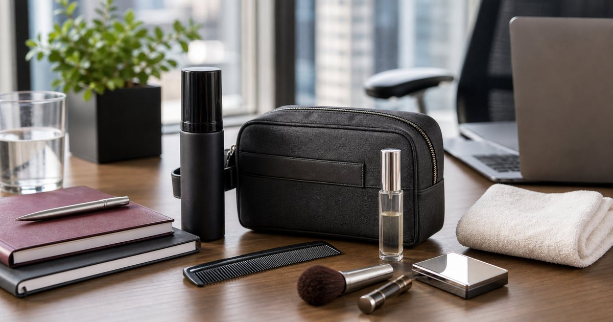

Elite Fashion｜會議前後的儀容整理包：髮品、補妝工具、香氛與小包配置
會議整理包不需要像行李箱。把髮品、補妝工具、香氛、毛巾與小包分成會前、會後與移動三層，工作日會更從容。

先分會前、會後與移動三種用途
會前需要的是快速整理，會後需要的是清潔和收回，移動時需要的是好找。三種用途不同，整理包自然不該塞同一種物件。
可以把 S′AIME、Apode、GINGER MAKE UP、BAYBEYLA、MORINO 與 UD LAB 放進同一個日常情境裡比較，但順序要放對。編輯部會先看使用頻率、清潔保存、是否適合出門攜帶、是否容易和既有用品搭配，而不是把保養或工具堆成越多越好。
比較穩妥的判斷是先確認 你最常在哪裡補整理：辦公室、車上、洗手間或客戶現場。常見失誤是 把整套化妝台塞進包裡，真正需要時反而找不到；在 顧問、講師、業務、主管與需要頻繁會議的人 裡，能被穩定使用、容易收好、看得懂使用限制的品項，通常比一次買很多更實際。
- 會前用品要能一分鐘拿到。
- 會後用品要能把用過的東西收好。
髮品和梳具要小份量，不要整瓶帶出門
會議整理包裡的髮品只需要處理當下狀態，不需要完整造型流程。小梳具、少量髮品或固定用品就夠。
可以把 Apode、KYOGOKU、SANSUI 山水與 GINGER MAKE UP 放進同一個日常情境裡比較，但順序要放對。編輯部會先看使用頻率、清潔保存、是否適合出門攜帶、是否容易和既有用品搭配，而不是把保養或工具堆成越多越好。
比較穩妥的判斷是先確認 是否能小份量攜帶、是否會漏、是否需要鏡子。常見失誤是 整瓶帶出門，包包重量和外漏風險都增加；在 下午會議、雨天通勤與拍攝前整理 裡，能被穩定使用、容易收好、看得懂使用限制的品項，通常比一次買很多更實際。
- 外出髮品以小容量為主。
- 梳具要有保護套或固定位置。
補妝工具要少而可靠
補妝工具不是把所有彩妝都帶出門。最常用的刷具、粉餅或唇部用品可放在小袋，其他留在家裡。
可以把 GINGER MAKE UP、BAYBEYLA、S′AIME 與 UD LAB 放進同一個日常情境裡比較，但順序要放對。編輯部會先看使用頻率、清潔保存、是否適合出門攜帶、是否容易和既有用品搭配，而不是把保養或工具堆成越多越好。
比較穩妥的判斷是先確認 哪些工具一週至少使用兩次、是否容易清潔。常見失誤是 每天背一堆工具，但真正會用的只有兩件；在 辦公室洗手間、客戶拜訪與活動現場 裡，能被穩定使用、容易收好、看得懂使用限制的品項，通常比一次買很多更實際。
- 補妝工具數量要能一眼看完。
- 刷具要有獨立保護，避免弄髒包內。
香氛和毛巾要克制，不能干擾別人
會議場合的香氛應該非常克制。它更像個人整理物，不是讓整個空間都聞到的存在；小毛巾或手帕則負責實際清潔。
可以把 THANN、au fait 無非、MORINO 與 S′AIME 放進同一個日常情境裡比較，但順序要放對。編輯部會先看使用頻率、清潔保存、是否適合出門攜帶、是否容易和既有用品搭配，而不是把保養或工具堆成越多越好。
比較穩妥的判斷是先確認 氣味是否低調、是否會影響同事或客戶。常見失誤是 補香太重，反而讓正式場合失去分寸；在 會議室、共享辦公室與商務午餐 裡，能被穩定使用、容易收好、看得懂使用限制的品項，通常比一次買很多更實際。
- 香氛用量宜低，並避開密閉空間。
- 小毛巾或手帕要定期更換清洗。
小包選擇要看包中包，而不是只看外型
整理包最實用的不是外型，而是它能不能在大包裡固定位置。內袋、拉鍊、分隔和材質，都會影響你在會議前能不能快速找到東西。
可以把 S′AIME、UD LAB、Mister、GINGER MAKE UP 與 BAYBEYLA 放進同一個日常情境裡比較，但順序要放對。編輯部會先看使用頻率、清潔保存、是否適合出門攜帶、是否容易和既有用品搭配，而不是把保養或工具堆成越多越好。
比較穩妥的判斷是先確認 是否能放進通勤包、是否能站立、是否好清潔。常見失誤是 只看外型，實際放入大包後完全找不到；在 通勤包、後背包、行李箱與講師工作包 裡，能被穩定使用、容易收好、看得懂使用限制的品項，通常比一次買很多更實際。
- 包中包要比外包小一圈。
- 透明或分層設計可降低翻找時間。
整理包每週重置一次，比每天補東西更有效
會議整理包最怕一直往裡面加東西。每週固定重置，把用完、髒了、過期或不再需要的東西拿出來，才會維持輕巧。
可以把 S′AIME、Apode、GINGER MAKE UP、BAYBEYLA、MORINO 與 UD LAB 放進同一個日常情境裡比較，但順序要放對。編輯部會先看使用頻率、清潔保存、是否適合出門攜帶、是否容易和既有用品搭配，而不是把保養或工具堆成越多越好。
比較穩妥的判斷是先確認 每週哪一天重置、哪些用品需要清潔或補充。常見失誤是 每天塞一點，兩週後變成雜物包；在 需要高頻移動和專業形象管理的工作日 裡，能被穩定使用、容易收好、看得懂使用限制的品項，通常比一次買很多更實際。
- 週末或週一早上固定重置。
- 整理包只服務工作日，不服務所有生活情境。
FAQ
會議整理包需要放完整彩妝嗎？
不需要。只放最常用、最容易補整理的少量工具即可，完整彩妝流程留在家中。
香氛適合帶進會議室嗎？
可以作為個人整理用品，但用量要非常克制，避免影響同事或客戶。
整理包多久該整理一次？
建議每週重置一次，把用完、髒了或不需要的品項拿出來，避免越帶越重。
下一步建議
如果你想做一個不臃腫的會議整理包，可以先從小包、髮品和補妝工具三個位置開始。
重要警語
本文為一般儀容整理、包款收納與工作情境整理，不構成保養、彩妝或髮品個別建議。所有用品請依個人狀況、場合與商品標示使用。
本文含品牌／商品導購連結；若你透過部分商品連結前往選購，Elite Fashion 可能取得合作收益。本文仍以編輯判斷與使用情境整理為主，價格、規格、活動與庫存請以商品頁公告為準。